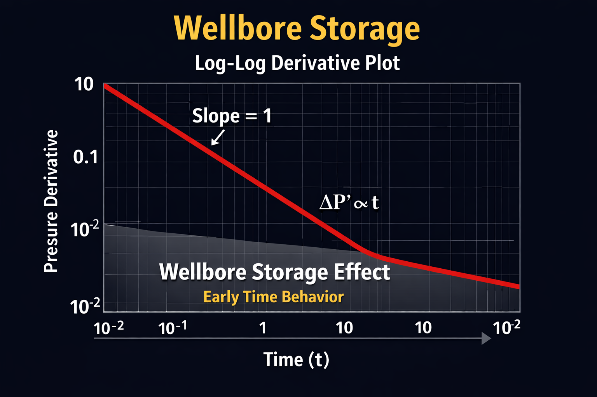

Field Specialist Course
1- Porosity (∅):-
- Definition of Porosity Porosity is the fracrion of the rock volume that consists of pore spaces.
-
Mathematecally:
If a rock has 25% porosity, that means 25% of its volume can store fluids.
∅ = V P V P
Porosity = Pore Volume / Bulk Volume
-
Types of porodity: .
Total Porosity VS Effective porosity
- Total porosity = all pore spaces
- Effective porosity = interconnected pore spaces that allow flow
-
Why Porosity is important in well testing:-
- How much fluid is stored in the reservoir
- How fast pressure changes propagate
- Tre reservoir's storage Capacity
2- Permeability (K)
- Definition of Permeability Permeability measures how easily fluids can move throug the rock. If porosity is the size of the tank, permeability is the size of the pipe connected to that tank. If porosity is the pores that fluid stores inside, permeability is the ID of size of these pores that are interconnetced together
-
What Controls production Rate:
Lower permeability ➡️ restricted flow Rate Higher permeability ➡️ High flow Rae Even if porosity is high , low permeability means fluids cannot move easily.
Q (Rate) ∝ K x ▲P
Darcy's Law (simplified idea)
-
Unit of Permeability
Permeability is measured in:-
- Darcy
- miliDarcy
- Tight rock: < 1 mD
- Average reservoir: 10-500 mD
- Very good reservoir > 1 Darcy
-
Why permeability is important in well testing:-
Permeability controls:
- How fast pressure responds
- How fast reservoir delievers fluids
- How quickly pressure disturbance travels
👨🏭Now think like an Engineer: Two reservoir have the same porosity, but:
Which one will show a smoother pressure drawdown curvereservoir pressure
- Definition of Reservoir pressure reservoir pressure is the natural pressure inside the reservoir before production begins. It is the force that pushes fluids (gas, oil & water) towards the wellbore
-
Where Does it Come from?
- the weight of the fluids above (hydrostatic pressure)
- Depth of the reservoir
P (Pressure) ≈ Fluid denisity (ρ) x Gravity (g) x Depth (h)
Deeper reservoir ➡️ higher pressure
-
Why is it important?
Reservoir pressure is your reference point. From it, we calculate:
- Drawdown = Pi - Pwf
- Productivity index
- Depletion
- Skin effect impact
-
How do we meassure it?
we estimate reservoir pressure from Buildup test
- produce the well
- Shut the well
- Let pressure recover
- Use analysis (like Horner method) to estimate Pi
-
Important concept
Reservoir pressure changes over time (It is not Constant)
- Before production ➡️ Initial reservoir pressure
- After years of production ➡️ Average reservoir pressure (Lower due to depletion)
👨🏭Now think Carefully: If reservoir pressure is very high, but permeability is very low:
Will production rate be high or low - and whyFlow Regimes
-
When a Well starts producing (or after shut-in), pressure response behave is not same for all time, a Reservoir goes through differemt flow regimes:
-
Wellbore Storage
What happens?
the fluid being produced is mainly coming from the wellbore itself, not reservoir yet.
So:- pressure drops very quickly
- the reservoir has not fully responded
- Data here does not represent reservoir properties
You never calculate permeability hereOn a log-log derivative plot:

Derivative slope ≈ 1
-
Transition Zone
Now the reservoir begins to feel the production.
pressure disturbance starts moving outward
the flow pattern still developing
the derivative still unstable here
Still not safe for reservoir calculation -
Radial Flow
this is the key regimes
-
Here:
- Pressure moves outward uniformaly in a circular pattern
- Flow is purely radial towards the well
- Behaviour becomes stable On Semi-Log Plot:
- Straight line On Derivative plot
- Horizontal flat line This is where we Calculate:
- Permeability
- Skin
- Reservoir pressure If Radial Flow does not appear - analysis is incomplete
-
Boundary Effect
After enough time, pressure wave reaches reservoir boundaries
-
Example:
- Faults
- Sealing boundaries
- Aquifer Support
- Closed Reservoir when this happens:
- pressure behaviour changes again
- Derivative rises or falls depending on boundary type
productivity index
-
:
Basic Drive Mechanisms
-
:
course Exam
✅ Important Notes Before You Start the Exam
📌 Please read these carefully before pressing the “Start Exam” button:- 🧘♂️ Take a deep breath and stay calm – This exam is about understanding, not just memorizing.
- ⏰ Make sure you're in a quiet, distraction-free space – Turn off notifications and focus.
- 🔌 Ensure a stable internet connection – Losing connection may end your exam session.
- 📝 Have everything you need ready – Paper, pen, calculator (if allowed), or any permitted tools.
- 🚫 No cheating or switching tabs – Some exams monitor your activity for fairness.
- 🧠 Read each question carefully – Don’t rush. Understand before you answer.
- 🎯 Only click the button when you're 100% ready – The exam timer will start immediately.
⚠️ Note:
Leaving the page or refreshing the browser may result in automatic submission or loss of progress.🚀 Ready to begin?
Click the button below to start your exam. Good luck! 💪